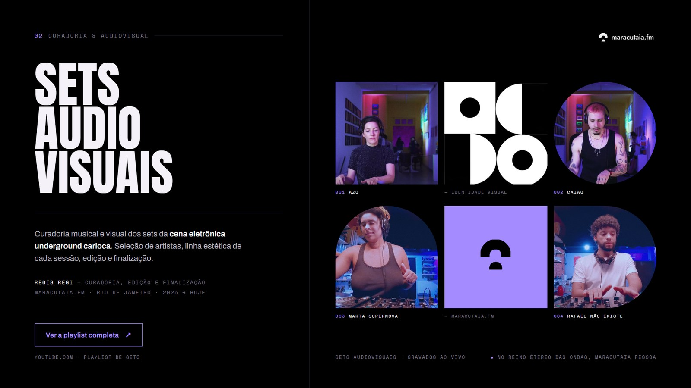

RégisRegi
Post-Production Coordinator Screenwriter Editor Curator
Post-production coordinator, editor, writer and curator. Eight years between global streamers and the independent scene, from conform on Netflix and Paramount+ originals to curating the underground electronic music of Rio de Janeiro.
↓ Scroll- Netflix
- Disney+
- Star+
- HBO Max
- Paramount+
- Discovery+
- A&E
- Canal Brasil
- Canal OFF
- TNT
- Porta dos Fundos
- Years in film & TV
- 08
- Platforms & networks
- 09
- Productions delivered
- 20+
- Areas of work
- 04
About
Post-production coordination across production companies, edit suites and platforms: master scheduling, asset management, technical conform and quality control under the standards of global streamers. Alongside that, writing original formats and curating content, on productions for Netflix, Disney+, Star+, HBO Max, Paramount+ and Porta dos Fundos.
A degree in Film (UFF) and a postgraduate specialization in Screenwriting (AIC), combined with a technical, aesthetic and strategic profile. In the workflow, AI tools come in as accelerators for post: automated transcription and logging, text-based editing and assisted quality control, always in service of the technical standard and of the story.
Work
-
01
Canal OFF · branded content
Supervision of the post workflows for documentary series and lifestyle programming, covering deadlines, crew allocation and deliveries aligned with the technical standards of Canal OFF. In parallel, running the editing and finishing workflows for campaigns for Banco C6, Cerveja Praya and BSC, with process control, asset management and optimization of the agency's deliveries.
-
02
Underground electronic scene of Rio
Musical and visual curation of the audiovisual sets, selecting artists from the independent electronic scene and defining the aesthetic line of each session. Editing and finishing of the sets for YouTube ↗ and creation of promotional pieces for Instagram, holding a consistent identity across episodes and extending the reach of the brand.

Maracutaia.fm -
03
Brazilian series and features
Coordination of the full post cycle for series and features (Galera FC ↗, Agentes Muito Especiais ↗, Temporada de Bônus, A Estranha na Cama), from planning through final delivery, answering for the technical and financial viability of each project. Building and monitoring the master schedule and the budget, with variance analysis and reallocation of resources. Focal point between executive production and the technical departments, standardizing the pipeline and the asset management workflows.

Galera FC 
Agentes Muito Especiais 
Temporada de Bônus 
A Estranha na Cama -
04
Canal OFF
Organization and supervision of the post workflows for documentary series and lifestyle programming, aligning deadlines, teams and deliveries with the standards of Canal OFF. Work on É Tudo Delas ↗, Ninguém Me Domina ↗, Histórias do Coletivo ↗ and Por Trás do Desafio ↗, holding the technical and narrative cohesion across episodes.

É Tudo Delas 
Ninguém Me Domina 
Histórias do Coletivo 
Por Trás do Desafio -
05
Netflix · Disney+ · Star+ · HBO Max
Management of the flow of materials and deliverables to global platforms on multi-episode projects such as Bom Dia, Verônica ↗, A Magia de Aruna ↗, Desejos S.A. ↗, O Lado Bom de Ser Traída ↗ and Luva de Pedreiro ↗, plus the feature documentary Isabella: o Caso Nardoni ↗, under international technical standards and tight delivery schedules. Liaison between independent production companies, edit suites and platforms, translating executive demands into operational requirements. Monitoring of the post stages with early detection of bottlenecks, plus media organization and technical conform to meet the specifications of each partner.

Bom Dia, Verônica 
A Magia de Aruna 
Desejos S.A. 
O Lado Bom de Ser Traída 
Luva de Pedreiro 
Isabella: o Caso Nardoni -
06
Comedy · multiplatform
Running the weekly sketch ↗ delivery operation across multiple platforms, in a high-demand regime with critical deadlines, aligned with the digital release strategy. Coordination of the editing, motion and finishing teams, with hour allocation and a direct interface with the creative team. Standardization of the processes between creative, production and post to clear bottlenecks, plus workflow and quality control reports that informed decisions on production capacity.
-
07
Brazilian originals
On As Seguidoras ↗, the first original scripted production by Paramount+ in Brazil, conform of materials across every stage of post and supervision of the creation and integration of the device screens, a central dramatic element of the series, plus technical quality control and content review under the specifications of the platform.
On Coração Suburbano ↗, a documentary series starring Rafael Portugal, organization and conform of materials, technical review of the episodes and standardization of the deliveries within the deadlines of the platform, with continuous support to the post team.

As Seguidoras 
Coração Suburbano -
08
Descomplica · NotCo · Discovery
Development and writing of original formats on three fronts: Descomplica, translating educational content into audiovisual language with a focus on retaining a student audience; NotCo, connecting food, technology and branding in a brand narrative; and Discovery+, with formats aligned to the editorial line of the channel in the streaming environment.
-
09
Canal Brasil · A&E
On the series 302 ↗ and 502 ↗ (Canal Brasil), organization and technical preparation of the episodes through to finishing, holding visual and narrative consistency across seasons, plus writing promos and digital content for social.
On Era de Ouro: O Nascimento dos Super-Heróis ↗ (A&E), support on the technical finishing of the episodes and collaboration on building and refining the writing and the edit, in partnership with Omelete.

Series 302 
Series 502 
Era de Ouro -
10
Live educational game show
Daily writing for the live game show Dez Segundos ↗: episode structure, question dynamics and interactions designed for the rhythm of the broadcast and for retaining a young, digital audience, turning study material into entertainment.
-
11
Independent literary podcast
Editing and finishing of the episodes across more than four years, building the sonic identity of the show and keeping a consistent listening standard between seasons, on a project dedicated to amplifying women's voices in literature.
Skills
Editing & finishing
- DaVinci Resolve
- Adobe Premiere Pro
- Technical conform
- Media organization
- Backup solutions
Operations & management
- Master scheduling
- Asset management
- Pipeline standardization
- Workflow and QC reports
- Streaming standards
Content & editorial
- Format writing
- Promos
- Content curation
- Critical and curatorial writing
AI in film & TV
- Transcription and logging
- Text-based editing
- Magic Mask · Voice Isolation
- Assisted QC
- NLP applied to content